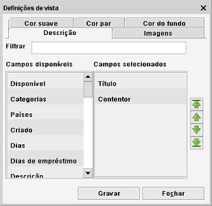

Definições da vista Cartão
Caminho de menu: Definições > Definições de vista
As definições de vista permitem-lhe alterar as cores e a informação na vista.
Descrição
Selecione o campo que será usado para descrever o item na vista cartão.

À esquerda na janela tem os campos disponíveis. À direita tem os campos atualmente usados na descrição.
Faça duplo clique em qualquer campo (coluna) para o mudar de lado.
Ao cimo está um campo de filtragem. Pode usá-lo para encontrar rapidamente campos disponíveis (já que a lista
pode ser longa).
Use as setas verdes à direita na janela para alterar a ordem dos campos. Clique num dos campos e clique na seta na direção
em que o quer mover. Também o pode mover para o princípio ou final da lista.
Imagens
Aqui pode escolher a imagem que quer mostrar. Se a primeira imagem estiver vazia, será usada a segunda e assim sucessivamente.
Cores
Defina as cores dos cartões ímpar e par e/ou a cor de fundo para todos os cartões.